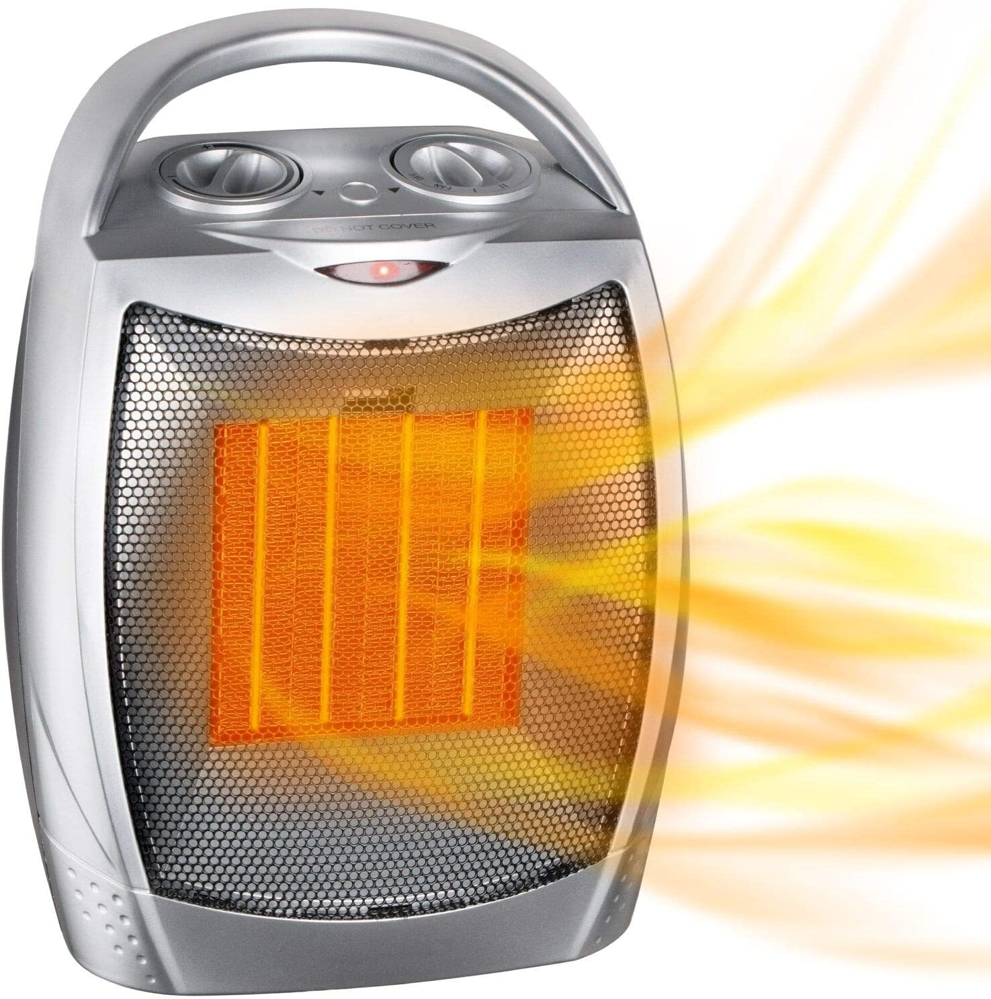

Keep barbecues clean and maintained.Examine the hose and its connections for leaks using a 50/50 solution of water and dish soap; if bubbles appear while the gas is on, you have a leak. Regularly check that the burner ports are clear of debris. Never leave a grill unattended while it's in use, and keep it away from fences |
|
|  | Keep heaters away from thingsKeep children, pets and things that can burn (paper, matches, bedding, furniture, clothing, carpets, and rugs) at least three feet away from heating equipment. |
DONT leave a fire place unattendedUse a glass or metal fire screen to keep flames and embers inside the fireplace and never leave a fire going in it unattended. |
|
Dont make cooking equipment a heaterNever use a cooking range or oven to heat your home. |
|
Dont leave chargers on outletsnever leave a charger on an outlet because it might cause a fire |
|
have a fire extinguisher in the house at all timesalways have a fire extinguisher just in case of an emergency |